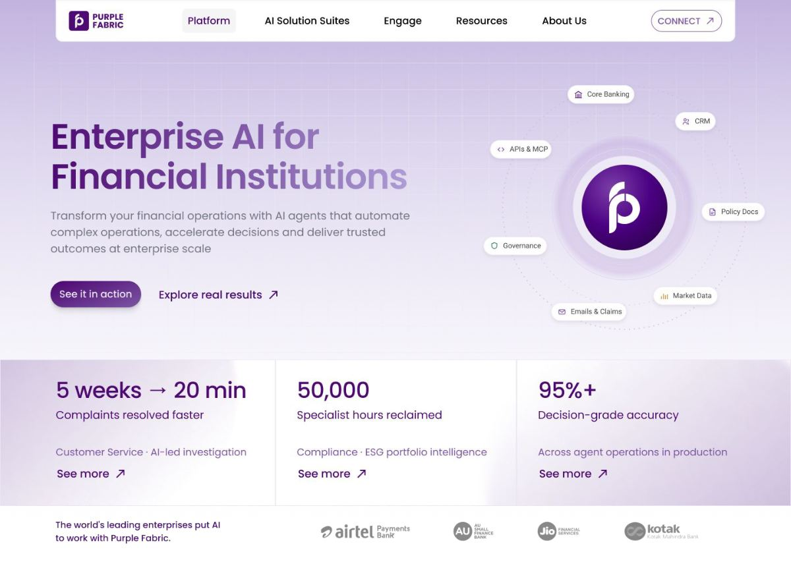
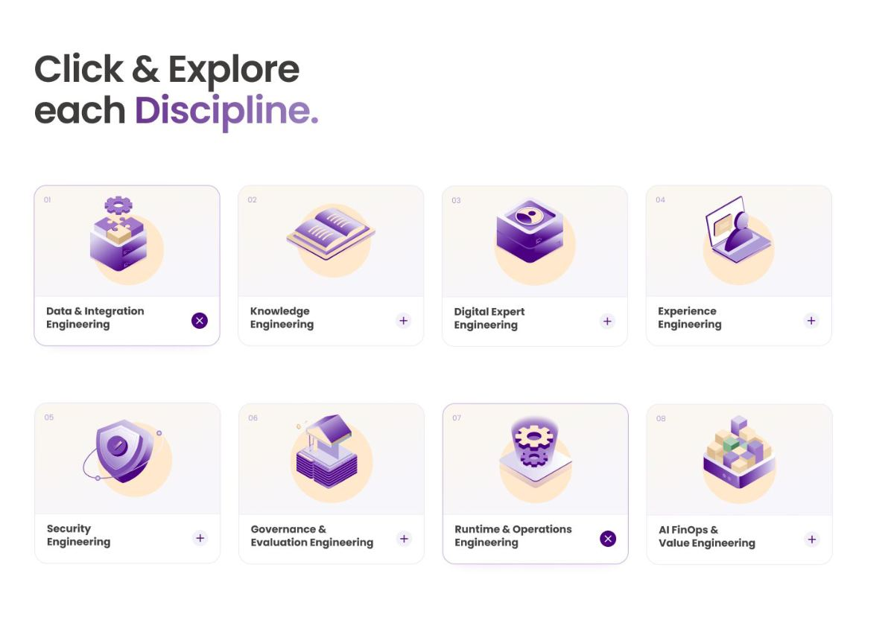
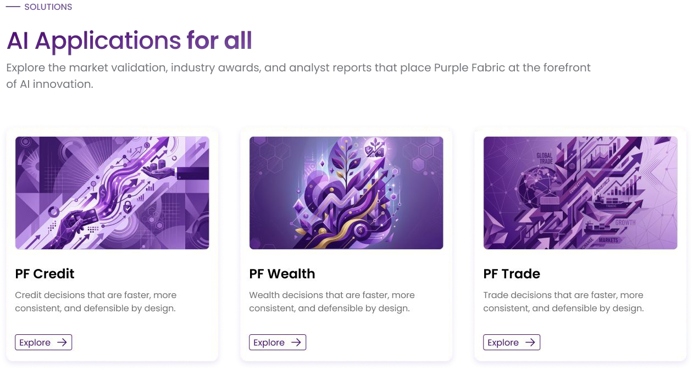
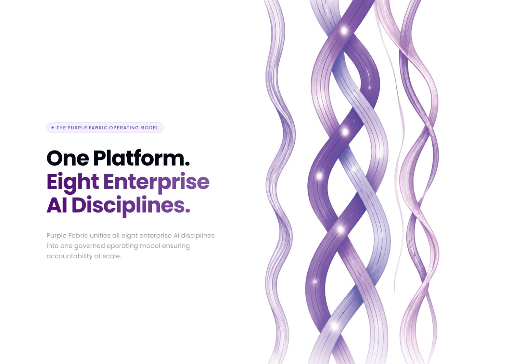
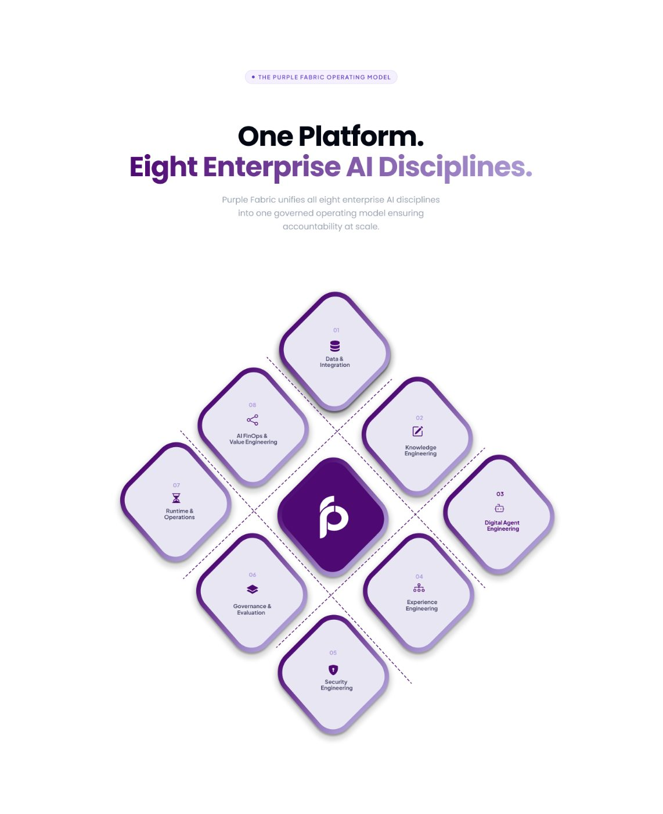
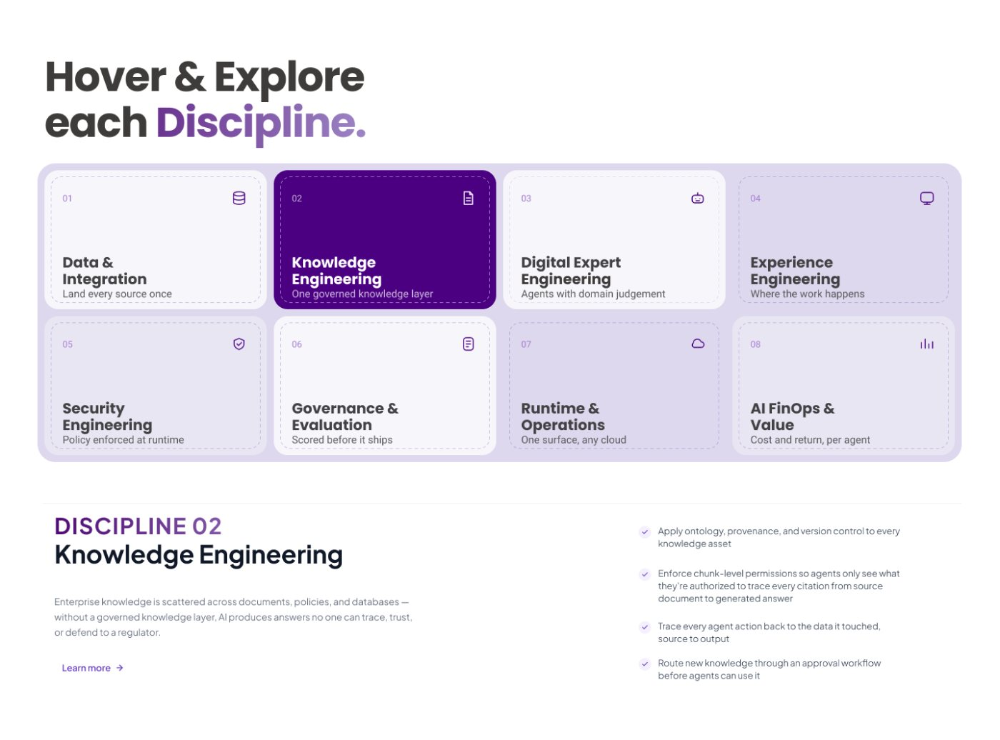
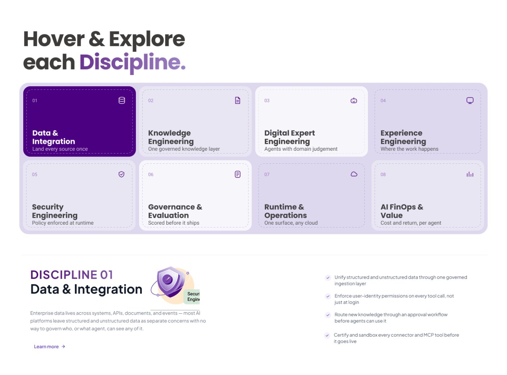

Redesigning the homepage of an enterprise AI platform for financial institutions — so a first-time visitor understands what it does, who it serves, and why to trust it in under 30 seconds.
I rebuilt an enterprise AI homepage around the buyer's questions instead of the platform's architecture
Purple Fabric is Intellect Design Arena's enterprise AI platform. Its homepage led with internal vocabulary — Enterprise OS, Knowledge Garden, Digital Experts, Business Impact AI — which meant a first-time visitor had to learn the company's language before learning what the product does. I audited the page, benchmarked five competitors, restructured the information architecture around a buyer's decision path, and designed a new homepage.
01Diagnose
Audited the live homepage section by section and named five specific failures — from generic positioning to an over-complex nav.
02Benchmark
Analysed Kore.ai, ServiceNow, C3.ai, Glean, Palantir, Domino and Dataiku for messaging, IA and trust-building.
03Rebuild
Wrote a new IA and copy deck, then designed the homepage: hero, impact, operating model, how it works, solutions, awards, CTA.
The problem
The homepage explained the platform's components before its value
I came to the product as a newcomer, which turned out to be useful. Even after completing a certification course, the platform only started making sense to me once I'd been walked through its concepts over several days. A first-time visitor gets seconds, not days.
The four friction points the platform actually resolves — none of which the homepage named.
How do we make a first-time visitor understand what Purple Fabric does, who it's built for, and why to trust it — without asking them to learn our internal vocabulary first?
Auditing the homepage
I went through the live page section by section
Hero
The messaging could be applied to any enterprise AI platform — there was no mention that this is a financial services AI platform. The call-to-action buttons were the one thing already working.
Navigation
Extremely complex compared to every other site I looked at. Sticking to standard, already-known layouts helps users navigate more easily and reduces cognitive effort.
Four tech stacks
Very text heavy. Easier to digest as a Build AI → Scale AI → Govern AI progression with a visual, so a viewer grasps the platform's function in 15 to 30 seconds.
Business impact
Great use of quantified outcomes already — 40% faster documenting, 60% less manual work, 3× faster deployment, 100% enterprise governance. But stated rather than shown, and not visual or interactive.
Who we serve
No mention of it anywhere on the page. There was also no problem section, so nothing told a visitor where Purple Fabric comes in.
Calls to action
One in the top-right corner and few elsewhere. Adding See a demo, Explore agents and Talk to an expert brings a visitor closer to a decision.
Competitor analysis
Every platform I benchmarked led with outcomes, not architecture
I studied seven enterprise AI platforms — how they position themselves, what vocabulary they use, how they build trust, and how their homepages are structured.
Kore.ai
Core messaging revolves around accelerating time to value. No mention of LLMs or model names — business outcomes come first. Governs with certainty: evaluate, trace, audit, 100% observability.
Clear messaging, fewer buzzwords, strong trust.
ServiceNow
The AI platform for business transformation. AI is presented as the engine, not the product. Heavy emphasis on one platform — arguing the biggest barrier to AI adoption is fragmented systems.
A viewer understands: this helps my business run better.
Glean
Find, create, accelerate, automate anything. Emphasis on what employees accomplish, not the technology underneath. Their visual breakdown of enterprise agents explains the concept in one diagram.
Homepage clarity is exceptionally strong.
Domino
Transform work that matters the most. Emphasis on AI outcomes rather than AI trends, with hard numbers: 50% reduction in lifecycle time, 6× faster development, 40% lower infrastructure cost.
Relentless ROI emphasis and a dedicated governance centre.
C3.ai
A repeatable page structure aimed squarely at decision-makers: positioning statement, three anchor KPIs, a problem–solution framework, a case study teaser, a free demo CTA, then resource links.
A buyer journey you can lift wholesale.
Dataiku & Palantir
Dataiku dedicates an entire page to running enterprise AI as one platform. Both reinforce the single-platform argument rather than listing capabilities in isolation.
One platform is the category's central promise.
Five takeaways
What the audit and the benchmark agreed on
1
Lead with financial services positioning
Without it, users might perceive Purple Fabric as just another generic enterprise AI platform.
2
Simplify the navigation bar
A simpler IA reduces cognitive load. Sticking to standard layouts helps users identify and navigate the site with ease.
3
Introduce a problem–solution section
It helps users identify where Purple Fabric comes in to help enterprises, and create impact in areas they may currently be lacking. People buy solutions to their problems.
4
Highlight measurable business outcomes
The numbers existed but could be made far more visual and interactive — ROI, cost savings, time reductions, productivity gains, customer stories.
5
Showcase platform capabilities through interactive visuals
Engaging, interactive visuals instead of a static screenshot build more credibility with users.
The story spine
Before laying out sections, I wrote the questions the page has to answer in order
Is this for me?Hero
Can it solve my problem?Problem
How does it solve it?Platform
Can I trust it?Governance
Does it work?Results
What's next?Demo
Why Purple Fabric — the four claims every section reinforces
One platform — no fragmented AI stack
Enterprise governance — built-in compliance from day one
Industry expertise — designed for financial institutions
Enterprise knowledge — AI grounded in your trusted data
Information architecture
Nine sections in, nine sections out — reordered around the buyer
Current
1 Navigation + Talk to us CTA + Intellect logo
2 AI Agents. True Business Impact.
3 What is Purple Fabric
4 Four tech stacks
5 What is Business Impact AI
6 Open model
7 What sets us apart
8 Partners
9 Footer
Proposed
1 Enterprise AI for financial institutions
2 See it in action + Explore real results
3 Impact numbers
4 Platform
5 Tech stacks
6 Agents
7 Testimonials
8 Awards and recognition
9 Footer
Nav bar, before
A deep, custom structure with no equivalent on any competitor site.
Nav bar, after
PlatformSolutionsCustomersResourcesAbout
The redesign
The homepage, rebuilt
01 · Hero & impact
Enterprise AI for Financial Institutions
The headline now says who it's for in five words. A live diagram shows the systems Purple Fabric connects to — core banking, CRM, policy docs, market data, emails and claims — and three outcome metrics sit immediately below the fold, followed by client logos.

02 · Operating model
One platform, eight disciplines
This is the single-platform argument the whole category makes, stated plainly and carried by an isometric visual instead of a paragraph.
03 · Progressive disclosure
Click and explore each discipline
The text-heavy tech stack section becomes eight expandable cards. A visitor sees the shape of the platform at a glance and opens only what's relevant to them — the depth is there without the wall of copy.

04 · Trust
AI built to scale, with governance shown not claimed
Six lifecycle stages on the left, an agent blueprint on the right, and a governance checkpoint that makes the compliance story concrete: roles defined, failure modes documented, data boundaries approved — discovered on a whiteboard, not in production.
05 · Solutions
An entry point by financial function
PF Credit, PF Wealth and PF Trade give visitors looking for a specific solution a faster route in, rather than making them work backwards from the technology.

06 · Credibility & close
Awards, then a single clear ask
Third-party validation answers "does it work?", and the page ends on one unmistakable call to action instead of a lone button in the corner.
Ideation & iteration
Finding the balance between illustrative and technical
The eight disciplines were the hardest part of the page to design. They needed to feel like one connected system rather than a list of capabilities, and the visual language had to read as credible to a bank without becoming another grid of grey boxes. I explored several directions before landing on one.
The fabric metaphor drove most of it. Purple Fabric is named for the idea of separate threads woven into one material, so the early explorations took that literally — braided strands, a woven lattice, threads crossing to form a surface. The imagery was beautiful, but on its own it said very little about what the platform does.

Direction one: literal woven strands. Strong brand presence, no information.

Direction two: a lattice with the disciplines orbiting it. The metaphor now carried structure, but the nodes were hard to scan and the hover card floated free of them.
Pulling the other way, I tested a purely functional version — eight cards in a plain grid with a detail panel underneath. It was easy to scan and easy to build, and it lost every trace of the brand. Both extremes failed for opposite reasons.
Direction three: a functional card grid. Highly scannable, visually anonymous.

The selected state carried the detail well, but nothing about it felt like Purple Fabric.
The diamond arrangement made the connection argument well, but it fought the reading order — nothing tells you where to start, and eight rotated tiles are hard to scan quickly.

Direction four: the weave as information architecture — eight tiles on the diagonals of a woven diamond, the platform mark at the centre.
What shipped keeps the weave in the language rather than the layout. The disciplines sit in a calm eight-card grid that scans in one pass, and each one carries an isometric illustration in the brand purples with a warm apricot ground. The illustration work is where the personality lives now — credible enough for a bank, warm enough not to read as another enterprise feature grid — and the headline carries the fabric idea in words: eight disciplines, one governed fabric.
The direction that shipped — scannable structure, with the fabric metaphor carried by illustration and copy.
Prototype
The page in motion
Scrolling through the rebuilt homepage — how each section hands off to the next, and how the platform reveals its depth on demand rather than all at once.
01 · The scroll
From the hero through the impact numbers, the operating model, and into the eight disciplines.
02 · Progressive disclosure
Opening a discipline card, and the lifecycle and governance sections that follow it.
Where it stands
What I took from redesigning an enterprise homepage
Being new to the product was the research.
My own confusion mapped almost exactly onto the first-time visitor's. Documenting it early, before I learned the internal vocabulary, was the most valuable input I had.
Information architecture is a messaging problem.
Reordering sections only worked once I'd written the questions each one answers. The structure followed the story, not the other way round.
In enterprise, trust is a design surface.
Governance, audit trails and compliance aren't fine print for this audience — they're a reason to buy, and they deserve their own section.
Competitive analysis settles internal debates.
Showing that seven platforms all use the same five-item nav made the case for simplifying ours far better than an opinion could.
Industry sub-pages for lending, payments, risk and insurance